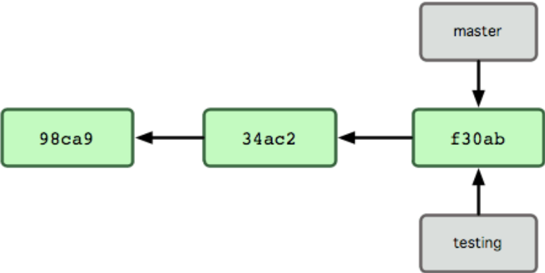

Github markdown¶
Paragraph¶
Text is always rendered as an inline paragraph style: <p></p>.
You can write on several lines, but it will always be rendered like this!
You can write on several lines, but it will always be rendered like this!
Line breaks¶
Markdown interprets 2 spaces as a line break.
Markdown interprets 2 spaces
as a line break.
Headings and font styles¶
# H1 ## H2 ### H3 #### H4 ##### H5 ###### H6 **bold** __bold__ *italic* _italic_ **Embed style _within_ styles** *Embed style __within__ styles* > Offset a quote
H1¶
H2¶
H3¶
H4¶
H5¶
H6¶
bold bold italic italic Embed style within styles Embed style within styles
Offset a quote
Strikethrough requires an MkDocs extension. You can get it by installing the package:
pip install mdx_del_int
Then adding it to the yml file:
markdown_extensions:
- del_ins
Lists¶
Markdown interprets numbers and ordered lists and hyphens as unordered lists. For ordered lists, markdown does not care about the actual number, only that it is a number.
Unordered lists¶
- Hyphens - or * asterisks * become * lists
- Hyphens
- or
- asterisks
- become
- lists
- Indent
- a hyphen
* or
* an asterisk
* to embedded lists
* within
* lists
- Indent
- the hyphens
- or
- the asterisks
- To embedded lists
- within
- lists
- within
Ordered lists¶
1. Numbers 3. don't matter! 6. Markdown will 1. get the sequence 100. correct
- Numbers
- don't matter!
- Markdown will
- get the sequence
- correct
1. You can use line breaks
in lists
6. so long as you
indent the next line.
100. Otherwise
you'll get a new line
10. And the sequence will break.
-
You can use line breaks
in lists
-
so long as you
indent the next line.
-
Otherwise
you'll get a new line
- And the sequence will break.
1. Just like unordered lists,
1. Indenting
1. makes
1. for
1. nested
1. lists
- Just like unordered lists,
- Indenting
- makes
- for
- nested
- ordered lists
- nested
- for
- makes
- Indenting
Tables¶
| Header 1 | Header 2 | Header 3 | |--- :|:--- |:---: | |This will be right justified because the colon is on the right|This will be left justified because the colon is on the left|This will be center justified because there are two| |Do not| |force | Spaces with the pipes, you'll cause problems|
| Header 1 | Header 2 | Header 3 |
|---|---|---|
| This will be right justified because the colon is on the right | This will be left justified because the colon is on the left | This will be center justified because there are two |
| Do not | ||
| force | Spaces | |
| with the pipes, you'll cause problems |
Markup¶
Inline code markup is rendered with back ticks that wrap the content.
`like this`
like this
A code block is rendered with three back ticks. You should specify the code type as well to get the correct syntax highlighting.
```syntax type here some line of code```
some line of code
Content boxes¶
You can create static boxes or expandable boxes, and you can specify the type of box, which will yeild different colors.
!!! Warning
Warning is orange
If you don't indent the lines
underneath the warning they will not be included
??? Warning
Question marks make the content box expandable
!!! Note
is blue
!!! Tip
is green
!!! Info
is light blue
Warning
Warning is orange If you don't indent the lines underneath the warning they will not be included
Warning
Question marks make the content box expandable
Note
is blue
Tip
is green
Info
is light blue
Links and images¶
The format for a link is like this:
[Link text in square brackets](url or path to file)
The format for images is the same but prefixed with an exclamation mark.

